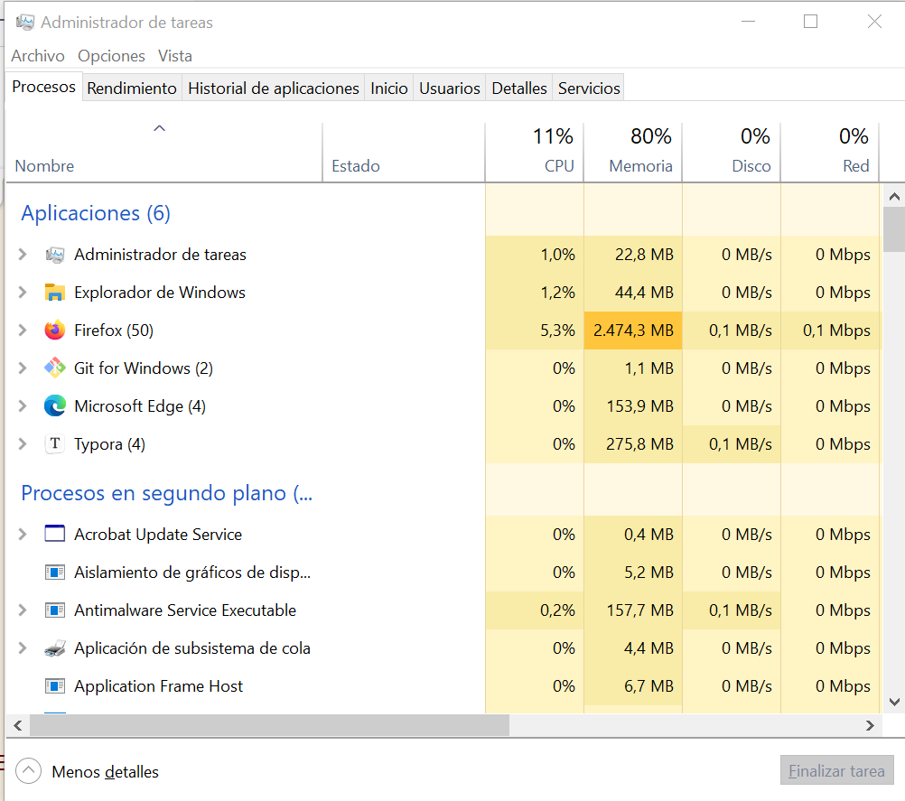
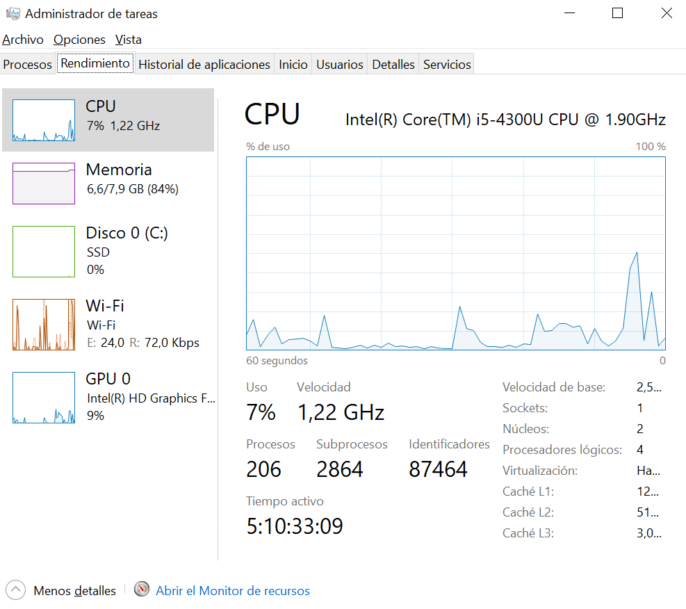
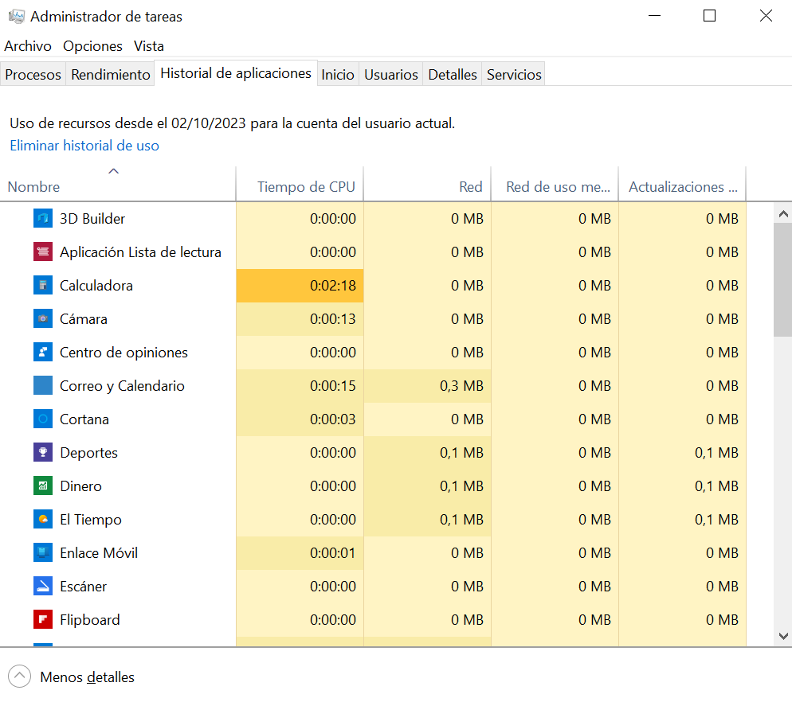
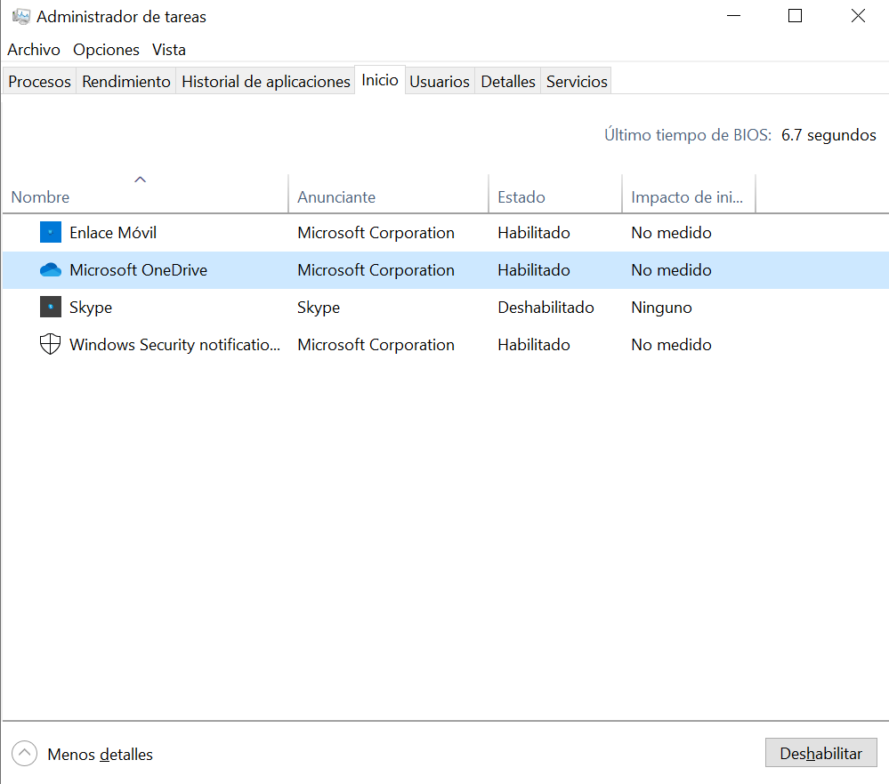
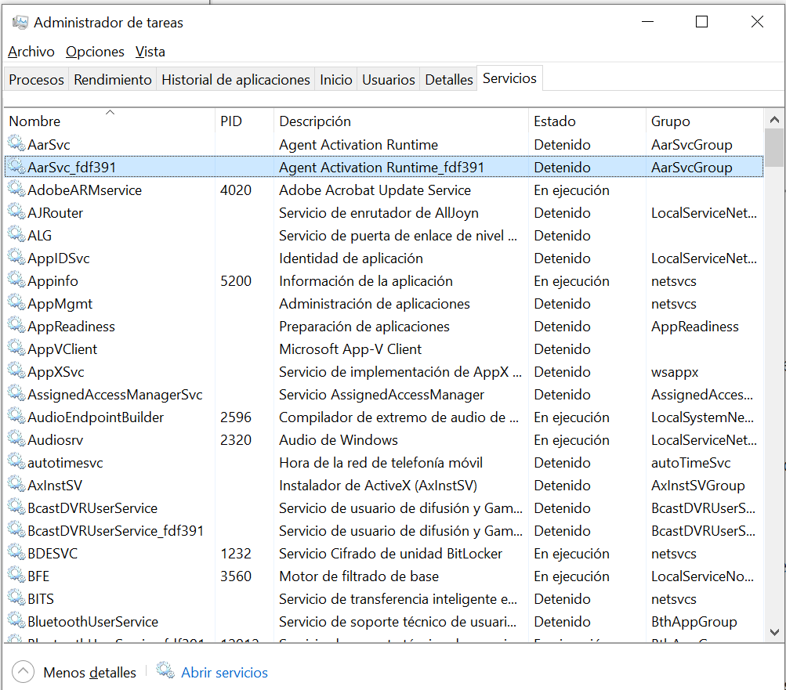
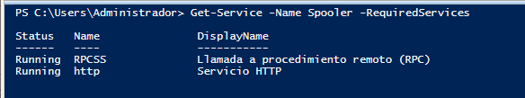

UT8. Administración en Windows
1. Definición de un proceso¶
Un proceso es una instancia de un programa en ejecución. Es decir, cada vez que se lanza un programa, se crea un proceso.
2. Estructura de los procesos¶
Los procesos se estructuran de forma jerárquica. El sistema operativo lanza el primero y a partir de este se crean todos los demás.
El sistema operativo crea una estructura de control en la que tiene toda la información del proceso. A esta estructura se le llama BCP (Bloque de control de proceso).
El BCP (Bloque de control del proceso), dependiendo del sistema operativo, suele almacenar :
-
Identificador del proceso (PID)
-
Estado del proceso: preparado, activo o bloqueado.
-
Contexto de la ejecución: registros del procesador, bits de estado.
-
Aspectos relacionados con la administración de la memoria: espacio de direcciones y cantidad asignada
-
Aspectos relacionados con la administración de ficheros: ficheros con los que el proceso está operando actualmente.
-
Estadísticas temporales: Tiempo de lanzamiento del proceso, tiempo en estado activo, etc.
3. Tipos de procesos¶
Atendiendo a la interacción con el usuario podemos distinguir:
- Procesos en primer plano (foreground): precisan de la intervención del usuario.
- Procesos en segundo plano (background): Se ejecutan sin que el usuario tenga que hacer nada
Atendiendo al modo en que se ejecutan podemos distinguir:
- Procesos en modo kernel: Son procesos que tienen acceso privilegiado a todo el equipo. Son mucho más seguros. La mayoría de procesos del sistema operativo son de este tipo.
- Procesos en modo usuario:Menos seguros. Todos los que ejecutan los usuarios y/o aplicaciones de usuario suelen ser de este tipo .
Dependiendo de quien lo ejecutó podemos distinguir:
- Procesos del sistema: Los que han sido lanzados por el propio sistema operativo.
- Procesos del usuario: Los que ha lanzado un usuario
4. Estados de un proceso¶
Hay tres estados básicos en los que puede estar un proceso:
- En ejecución: Tiene asignada la CPU
- En espera: Está en la lista para que se le conceda el procesador.
- Bloqueado: Está esperando a que se libere un recurso para poder seguir con su ejecución.
Al ejecutar un programa:
1- Nueva entrada en la tabla de procesos.
2 - Se le asigna un PID al proceso.
3 - Asignan recursos y memoria
4 - Se cargan las páginas del programa en memoria
5 - Se pone el proceso en la lista de espera
Cuando se le concede el procesador el proceso pasa a estar en ejecución. Y si necesita algún recurso que no está disponible pasa al estado de bloqueado. En el momento en que el recurso se libere, vuelve a estar en espera. También puede pasar que se le acabe su tiempo de CPU y vuelva al estado de espera.

5. Hilos de ejecución (Threads o procesos ligeros )¶
Los procesos pueden ejecutarse como un solo hilo, es decir, las instrucciones van siguiendo un orden y nunca se pueden ejecutar a la vez dos instrucciones del mismo proceso, o en multihilo. Esta última consiste en que partes del mismo proceso pueden ejecutarse en paralelo, es decir, el mismo proceso tiene partes que pueden ejecutarse a la vez.
Un proceso tiene asignado un BCP y los hilos son parte del mismo proceso. La memoria asignada se comparte entre todos los hilos. También se comparten el resto de recursos.
Podemos distinguir:
-
Hilos a nivel de usuario: Son los cuales crean los programadores y de los cuales el kernel o núcleo del sistema no es consciente de que existan, por lo que el programador debe encargarse de la sincronización.
-
Hilos a nivel de kernel: Son gestionados por el sistema operativo. Si tenemos un procesador con varios núcleos y/o varios procesadores, se acelerará la ejecución del proceso.
Ventajas de los hilos frente a los procesos
- Los hilos son mucho más ligeros. En la creación de un procso se necesita un tiempo para la adjudicación de recursos, cosa innecesaria en el cambio entre hilos.
- En caso de procesadores multinúcleo o sistemas multiprocesador, la eficiencia de los procesos que utilizan hilos es evidente, al poder realizar varias tareas en paralelo
6. Gestión de los procesos y servicios en Windows¶
6.1 Administrador de tareas¶
El Administrador de tareas de Windows proporciona información de los procesos que el ordenador está ejecutando, la actividad de red, los usuarios y los servicios del sistema.
Iniciar el Administrador de Tareas
Para iniciar el administrador de tareas podemos utilizar cualquiera de los siguientes métodos:
- Mediante el menú contextual en la barra de tareas y seleccionando "Administrador de tareas".
- Pulsando las teclas Ctrl+Mayus+Esc
- Pulsando las teclas Ctrl+Alt+Supr y seleccionar Administrador de Tareas.
- Desde la línea de comandos ejecutando taskmgr.

Pestañas del Administrador de Tareas¶
Pestaña Procesos¶
En la pestaña Procesos podemos observar las aplicaciones en funcionamiento, así como los procesos en segundo plano que están ejecutándose. Las columnas siguientes indican los porcentajes de recurso que utilizan: Procesador(CPU), Memoria, Disco y Red.
En la parte inferior disponemos del botón Finalizar Tarea que cierra la tarea seleccionada.
Pestaña Rendimiento¶
En esta pestaña podemos observar toda la información referente al rendimiento del equipo.

Pestaña Historial de Aplicaciones¶
En la pestaña Historial de Aplicaciones mostrará el uso de CPU y red de determinadas aplicaciones desde una determinada fecha.

Pestaña Inicio¶
En esta pestaña nos muestra una lista de aplicaciones que pueden habilitarse al inicio. Si hacemos clic en cualquiera de ellas podemos habilitar/deshabilitar pulsando en el botón inferior derecho.

Atención
Muchas aplicaciones habilitadas al inicio pueden hacer que el equipo arranque más lento
Pestaña Usuarios¶
En esta pestaña se muestran los usuarios que tienen la sesión abierta en el equipo y su estado.
Pestaña Detalles¶
Muestra información detallada de los procesos y aplicación en ejecución, así como una descripción de cada uno de ellos.
Pestaña Servicios¶
Muestra información acerca de los servicios disponibles en el sistema. Desde esta pantalla, pulsando clic derecho sobre cada servicio, el usuario podrá iniciar, detener o reiniciar cualquier servicio.

6.2 Servicios¶
Los servicios son procesos del sistema que están ejecutándose en segundo plano. Desde el administrador de tareas podemos iniciar o detener un servicio, pero si queremos definir los servicios que se arrancan al inicio debemos realizarlo a través del Administrador del Servidor -> Servicios.
7. Administrar los procesos y servicios utilizando PowerShell¶
7.1 Consultar la información de procesos¶
El cmdlet Get-Process (ps) nos permite mostrar la información de un proceso. A continuación se muestran algunos parámetros que pueden utilizarse con este cmdlet.
| Parámetro | Descripción |
|---|---|
| -Id | Especifica uno o varios procesos por su número de identificador de proceso (PID). |
| -Name | Especifica uno o varios procesos por su nombre |
Ejemplo: Mostrar los procesos activos
Columnas:
-
Handles: nº de referencias abiertas por el proceso
-
NPM y PM(KB): memoria utilizada (no paginada y paginada) por el proceso.
-
WS(KB): Tamaño del proceso.
-
CPU(s): Tiempo de procesador utlizado por el proceso.
-
Id: Número que identifica al proceso.
-
SI: Es un número que identifica al dueño del proceso.
-
ProcessName: Nombre del proceso.
Ejemplo: Mostrar los 10 procesos que consume más CPU
-
Ordenamos los procesos por consumo de CPU en forma descendente
-
Seleccionamos los 10 primeros .
Ejemplo: Muestra los procesos del usuario Administrador del dominio EMPRESA

Ejemplo: Obtener información sobre un proceso: notepad
Ejecutamos el programa Notepad (Bloc de notas)
Get-Process -Name notepad
Get-Process -Name Notepad | fl *
#Extraemos una propiedad de un proceso: Ubicación del archivo.
(Get-Process notepad).path
#Extraemos una propiedad de un proceso: Tamaño del proceso.
(Get-Process notepad).ws
#Tamaño del proceso expresado en MB
(Get-Process notepad).ws/1mb
7.2 Detener procesos¶
El cmdlet Stop-Process nos permite detener uno o más procesos en ejecución.
| Parámetro | Descripción |
|---|---|
| -Id | Especifica uno o varios procesos por su número identificador del proceso (PID). |
| -Name | Especifica uno o varios procesos por su nombre |
| -Force | Detiene el proceso identificado sin pedir una confirmación de la operación |
Ejemplo: Detener el proceso notepad
#Localizamos el proceso notepad
Get-Process -Name notepad
#Detenemos el proceso notepad
Stop-Process -Name Notepad
#También podemos detenerlo especificando el identificador
Stop-Process -Id 4388
7.3 Iniciar procesos¶
El cmdlet Start-Process nos permite iniciar procesos.
| Parámetro | Descripción |
|---|---|
| -FilePath | Especifica la ruta de acceso al archivo que se va a ejecutar. |
| -ArgumentList | Especifica los parámetros o los valores de parámetros que se van a utilizar durante el arranque del proceso. |
| -Wait | Espera a que finalice la ejecución del proceso especificado antes de aceptar una nueva entrada. |
Ejemplo: Iniciar un proceso especificando la ruta
Start-Process -FilePath "C:\Windows\notepad.exe"
Start-Process -FilePath "C:\ProgramFiles(x86)\Google\Chrome\Application\chrome.exe"
Ejemplo: Iniciar un proceso especificando solo el nombre
También se puede iniciar un proceso especificando solo el nombre, ya que la ruta la encuentra el sistema porque se encuentra en la variable de entorno $PATH
Ejemplo: Iniciar un proceso pasándole un argumento
Abrimos Chrome y la página web de google.es
Iniciar una APP de Windows
Aunque las apps de Windows tienen un archivo exe asociado que se encuentra en C:\Windows\SystemApps, no se pueden ejecutar desde el archivo.exe. Hay que utilizar el protocolo asociado.
Edge: Start-Process Microsoft-Edge://
Edge: Start-Process Microsoft-Edge:https://google.es
Windows Store: Start-Process Ms-Windows-Store://
Alarmas y reloj: Start-Process Ms-clock://
Mapas:Start-Process BingMaps://
7.4 Consultar información de los servicios¶
El cmdlet Get-Service nos proporciona información de los servicios. A continuación se muestran algunos parámetros utilizados por este cmdlet:
| Parámetro | descripción |
|---|---|
| -Name | Especifica los nombres de los servicios que hay que obtener |
| -DisplayName | Especifica los nombres mostrador de los servicios que hay que obtener. |
| -DependentServices | Obtiene únicamente los servicios que dependen del servicio especificado. |
| -RequiredServices | Obtiene únicamente los servicios que este servicio requiere |
Columnas por defecto
Status: Estado del servicio (Stopped, running, etc)
Name: Nombre del servicio.
DisplayName: Nombre para mostrar.
Ejemplo: Muestra los servicios que están arrancados
Mostrar información detallada de un servicio.
Cola de impresión (Spooler): Este servicio pone en cola los trabajos de impresión y administra la interacción con la impresora. Si lo desactiva, no podrá imprimir ni ver las impresoras.
Ejemplo: Buscar el servicio spooler
#Buscamos el servicio Name
Get-Service -Name "Spoo*"
#Buscamos el servicio por DisplayName
Get-Service -DisplayName "cola*"
#Obtenemos más información del servicio:
Get-Service -Name spooler | fl *

Ejemplo: Mostrar los servicios necesarios para iniciar el servicio spooler

7.5 Detener un servicio¶
El cmdlet Stop-Service se utiliza para detener un servicio.
| Parámetro | Descripción |
|---|---|
| -Name | Especifica los nombres de los servicios que hay que detener. |
| -DisplayName | Especifica los nombres para mostrar de los servicios que hay que detener. |
| -Force | Permite detener un servicio incluso aunque tenga servicios dependientes. |
Ejemplo: Detener el servicio de la cola de impresión
Debemos ejecutar el siguiente comando como administrador
Ejemplo: Detener el servicio Windows Update
Stop-Service -Name wuauserv
#En caso de no detener el servicio utilizamos la opción -force
Stop-Service -Name wuauserv -Force
7.6 Iniciar un servicio¶
El cmdlet Start-Service se utiliza para iniciar un servicio.
#Iniciar el servicio de cola de impresión.
Start-Service -Name Spooler
#Iniciar el servicio de Windows Update
Start-Service -Name wuauserv
7.7 Modificar propiedades de los servicios¶
El cmdlet Set-Service nos permite modificar algún parámetro de un servicio.
Podemos modificar:
- Description: Descripción del servicio.
- DisplayName: Nombre para mostrar
- Tipo de inicio: StartupType
- Estado del servicio: Status
Ejemplo: Modificar una propiedad - Tipo de inicio
Los modos de arranque de un servicio son los siguientes:
- Manual: Lo arranca Windows cuando es necesario.
- Automático: Se arranca automáticamente con el inicio de Windows .
- Automático (Inicio retrasado): Se arranca automáticamente, pero con cierto retraso respecto al inicio de Windows.
- Deshabilitado: El servicio no arrancará en ningún caso.